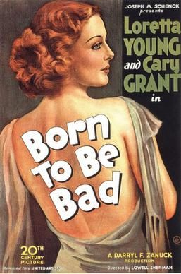
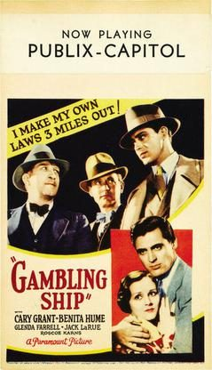
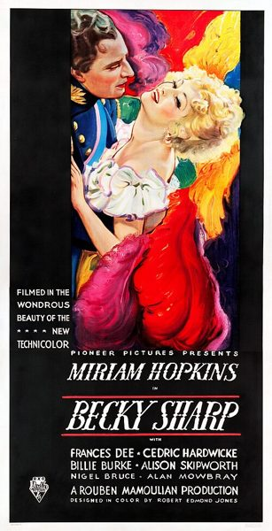
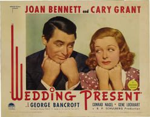
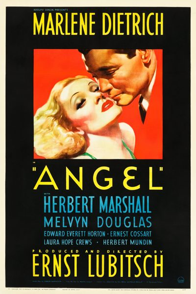
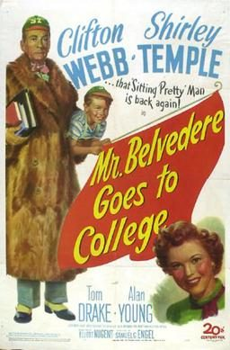

THE STANFORD THEATRE
Now Showing
·
Upcoming
·
Past
·
Search
March 13 - June 14, 2015
Cary Grant, plus Ernst Lubitsch and Rouben Mamoulian
24 bills
March 13 - 15
Bringing Up Baby (1938)
102 min
This Is the Night (1932)
80 min
March 18 - 19
The Love Parade (1929)
110 min
Applause (1929)
82 min
March 20 - 22
She Done Him Wrong (1933)
68 min

Born to Be Bad (1934)
62 min
March 25 - 26
Monte Carlo (1930)
94 min
City Streets (1931)
82 min
March 27 - 29
Holiday (1938)
92 min
Kiss and Make Up (1934)
78 min
April 1 - 2
Dr. Jekyll and Mr. Hyde (1941)
113 min
The Smiling Lieutenant (1931)
92 min
April 3 - 5
Only Angels Have Wings (1939)
121 min

Gambling Ship (1933)
72 min
April 8 - 9
Love Me Tonight (1932)
96 min
The Man I Killed (Broken Lullaby) (1932)
76 min
April 10 - 12
The Talk of the Town (1942)
119 min
Sylvia Scarlett (1935)
95 min
April 15 - 16
One Hour with You (1932)
82 min
The Song of Songs (1933)
90 min
April 17 - 19
Topper (1937)
95 min
Madame Butterfly (1932)
83 min
April 22 - 23
Trouble in Paradise (1932)
83 min
We Live Again (1934)
85 min
April 24 - 26
Gunga Din (1939)
108 min
The Devil and the Deep (1932)
78 min
April 29 - 30

Becky Sharp (1935)
85 min
Design for Living (1933)
88 min
May 1 - 3
The Philadelphia Story (1940)
108 min
Thirty Day Princess (1934)
74 min
May 6 - 7
The Merry Widow (1934)
99 min
The Gay Desperado (1936)
86 min
May 8 - 10
His Girl Friday (1940)
90 min

Wedding Present (1936)
80 min
May 13 - 14
Queen Christina (1933)
97 min

Angel (1937)
91 min
May 15 - 17
Penny Serenade (1941)
119 min
I'm No Angel (1933)
87 min
May 20 - 21
Bluebeard's Eighth Wife (1938)
85 min
High, Wide and Handsome (1937)
110 min
May 22 - 24
The Awful Truth (1937)
87 min
Hot Saturday (1932)
72 min
May 27 - 31
The Mark of Zorro (1940)
94 min
Ninotchka (1939)
110 min
June 5 - 7
The Bachelor and the Bobby-Soxer (1947)
97 min

Mr. Belvedere Goes to College (1949)
83 min
June 12 - 14
Bright Eyes (1934)
83 min
Poor Little Rich Girl (1936)
79 min
Wee Willie Winkie (1937)
90 min